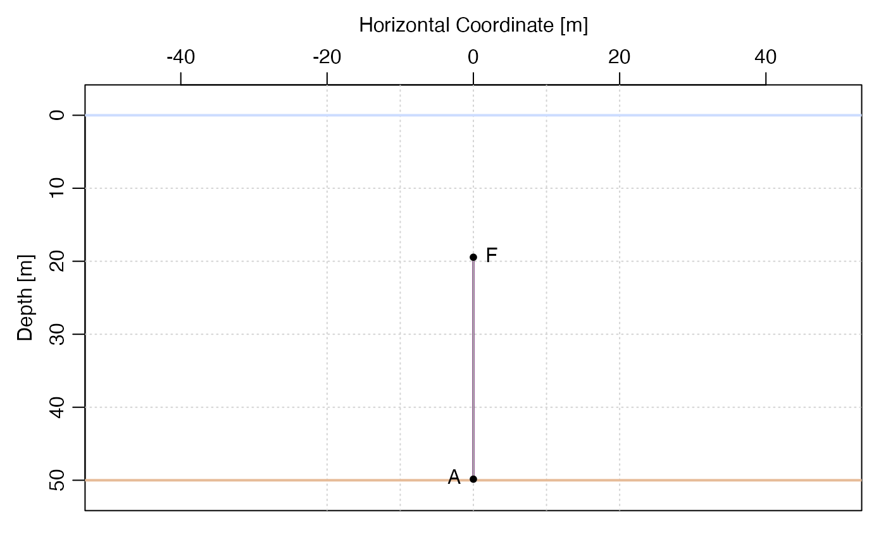
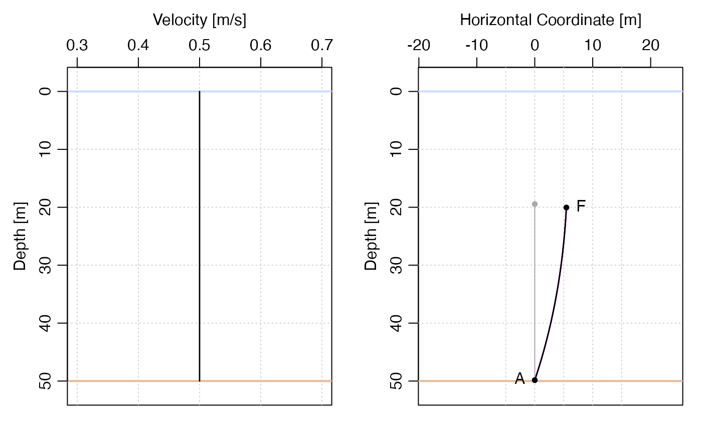
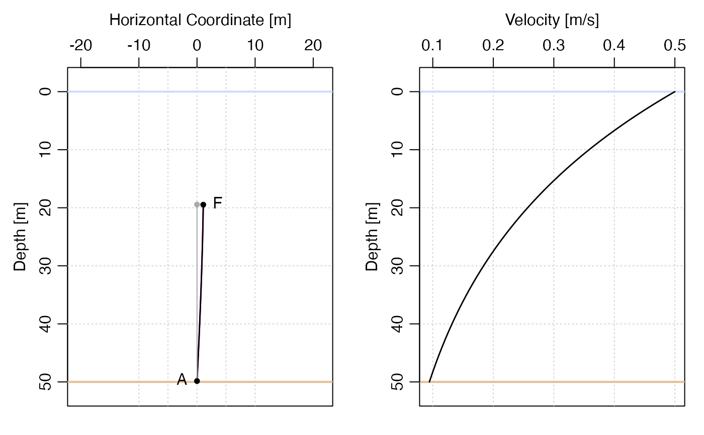
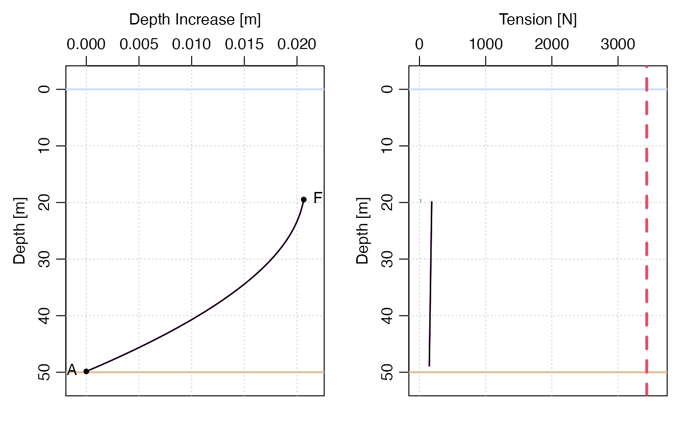

The current may be a depth-independent or depth-dependent, as
specified by the u argument. The computation is iterated at most
niteration times until the RMS deviation between computed z
values falls below the product of convergenceCriterion and wire
length. The returned result has an attribute named u that holds
the value of that argument, and this is how a later call to
plot() is able to display a velocity profile; see
Examples 2 and 3.
knockdown(m, u = 1, convergence = 0.1, maxiteration = 100, debug = 0L)an object of the "mooring" class, usually created with
segmentize().
either a non-negative number indicating depth-independent velocity, or a function that returns that velocity as a function of depth (m) below the ocean surface.
criteria for stopping the iteration process.
If the root-mean-squared difference in element angles
drops below this convergence degrees, then convergence is declared and the iterative
solution process stops. If not, then the iteration stops after maxiteration
passes (and a warning is issued). In any case, the actual number of
iterations is stored in an attribute named iterations, the RMS
angle difference (in degrees) is stored as RMSAngleChange,
and the RMS difference in element depth (in m) is stored
RMSDepthChange.
an integer value (or a numeric that can be converted to an integer) that controls debugging. If this is positive, then some debugging information may be printed by the function.
knockdown returns a mooring object representing the
deformed mooring, with x and z values updated, with the
original values being saved as x0 and z0. In addition, the
stress and angle of each element is stored in fields named tau
and phi, the latter in radians. Attributes are added to the
object to describe the solution in more detail. The u attribute
stores the value supplied to knockdown(), and waterDepth stores
the water depth that was supplied to the anchor() call. An
overview of the iterative solution is provided in the
attributes (see convergence).
# Illustrate importance of drag on the wire.
library(mooring)
m <- mooring(anchor(), wire(length = 30), float("16in Viny"), waterDepth = 50)
ms <- segmentize(m)
# Example 1: no current
plot(ms)

# Example 2: uniform 0.5 m/s (approx. 1 knot) current
par(mfrow = c(1, 2))
k1 <- knockdown(ms, u = 0.5)
plot(k1, which = "velocity")
plot(k1)

# Example 3: 0.5 m/s surface current, exponential decay below
k2 <- knockdown(ms, u = function(depth) 0.5 * exp(-depth / 30))
par(mfrow = c(1, 2))
plot(k2)
plot(k2, which = "velocity")

# Example 4: as Example 3, but show knockdown and tension
# The red dashed line in the tension plot indicates the
# anchor weight.
par(mfrow = c(1, 2))
plot(k2, which = "knockdown")
plot(k2, which = "tension")
